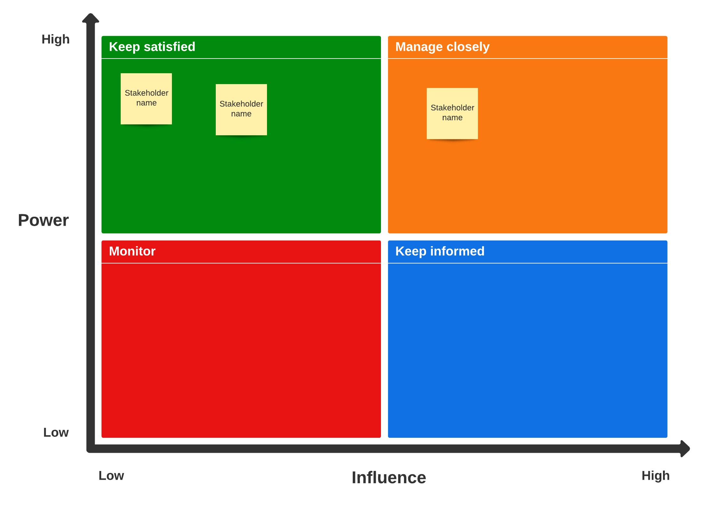

Session 2: üî§ Community of Practice Basics
DRAFT PRE-ALPHA VERSION FOR ONLINE WEBPAGE
As a community, great things can happen when each individual contributes, according to their strengths, toward a common goal. ― Idowu Koyenikan
Key lessons
- Purpose and outcomes of your community
- Creating a stakeholder map
- Developing roles and responsibility documentation
- Community communication channels
üñ• Part 2: Mapping Stakeholders and their engagement needs
Let’s first start by reflecting on these questions
- Why invest in community building?
- What are some good examples of community building have you experienced?
2.1 Purpose and outcomes
Each participant can create a table to add details from their projects.
| Project/subproject Names | Purpose | Outcomes |
|---|---|---|
2.2 Identifying Stakeholders
| Contributors | Role | Nature of participation |
|---|---|---|
2.3 Optional for projects with many stakeholders: Prioritising Stakeholders

Template for the Community Management at the Turing
Extanded Miro Board for Stakeholder and Communication/Engagement Mapping
Find general templates for reuse:
2.4 Resources and engagement/communication platforms
Resources and infrastructure:
- Tools/platforms:
- Documentation:
- Infrastructure:
- Events:
- [Anything else?]
Types of engagement:
- Primary: GitHub
- Asynchronous: Newsletter, talks, Slack, Twitter, documentation
- Synchronous: Co-working calls, Collaboration Cafe, Book Dash
- Let’s discuss the other types of engagements you have implemented …
üìù Assignment 2 + Discussions:
2 - Community of Practice Basics ← [MAKE A COPY]
- What is the purpose of your CoP or project? What are the main and expected outcomes of the project?
- Who are your stakeholders and what are their roles?
- How do you facilitate their participation, collaboration and contributions - what are the engagement and communication platforms?
Reading recommendation
- Research culture: let’s reimagine how we work together: https://wellcome.org/what-we-do/our-work/research-culture
Note:
- The assignments from this session is for you to come back to, update and reflect on periodically, such as in the mid-year or annual review.
- You can exchange this with other community managers to get some feedback.
üè° Key takeaways
In this session, we discussed:
- How to map the purpose and outcome of your community
- How to map stakeholders and their engagement in the project
- how to enable that engagement through appropriate communications tools, channels and platforms